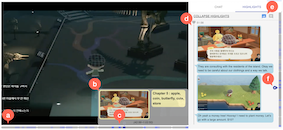

Hi! I am a second year Ph.D. student in the School of Computing at
KAIST. I am working with Juho Kim as part of KIXLAB.
My research interests in Human-Computer Interaction focuses on video interactions, where I aim to understand video
content by using HCI+AI and build interactive technologies on them.
News
- 2022/3 - I'll be serving as an SV in IUI 2022 and presenting SoftVideo!
- 2022/3 - Our paper has been accepted to CHI 2022 workshop on Computational Approaches for Understanding, Generating, and Adapting User Interfaces!
- 2022/2 - I received a Special Recognition for Outstanding Reviews at CHI 2022!
- 2022/2 - Our paper CatchLive has been accepted to CHI 2022!
- 2021/12 - Our paper Softvideo has been accepted to IUI 2022!
Publications
Conference and Journal Papers

CatchLive: Real-time Summarization of Live Streams with Stream Content and Interaction Data (to
appear)


Posters, Demos, and Workshop Papers

Improving Video Interfaces by Presenting Informational Units of Videos (to
appear)
Awards & Honors
- Special Recognition for Outstanding Reviews (CHI 2022)
- An Outstanding TA Awards (2021 Spring)
- An Outstanding MS Thesis Award (2021)
- Kwanjeong Scholarship (2019)
- Google WTM Scholarsip (2018)
- Dean's List - School of Computing, KAIST (2018 Spring)
Experiences
-
Adobe Research
Reserach Intern, Creative Technologies Lab (Jun 2020 - Sep 2020)
Mentor: Hijung Valentina Shin -
KIXLAB, KAIST
Reserach Intern (Jun 2018 - Dec 2018)
Mentor: Juho Kim -
ACRYL
Software Engineer Intern (Jan 2018 - Feb 2018)
Education
-
Ph.D. in School of Computing, KAIST (2021-Present)Advisor: Juho Kim, GPA: 4.16/4.3
-
M.S. in School of Computing, KAISTAdvisor: Juho Kim
-
B.S. in School of Computing, KAISTMagna Cum Laude